Constants, Variables, and Expressions
Variables are a new feature in Powerups 3.9 and above and are in "beta", meaning that some issues are to be expected. I will fix problems in a timely manner (with any luck); please report issues to me in Discord!
Expressions
An Expression in Sequencer Powerups is pretty much any kind of mathematical expression using numbers (fixed or floating point), Constants, and Variables, plus Switch values, Gauge values, and Weather values (plus Camera sensor temperature and Dome shutter status). Note that Switch, Gauge, Weather, Camera, and Dome values are only available if the appropriate gear is connected!
Expressions can be used in various "enhanced" instructions (enhanced in the sense that they accept Expressions in place of numbers), as well as some new instructions like If and Loop While. Enhanced instructions are named with "+" appended to the instruction name (e.g. Take Exposure +, Cool Camera +, etc).
So, for example, in Take Exposure +, the value of Exposure Time might be 10 or ExpTime (assuming ExpTime is defined as a Constant or Variable; see below) or even ExpTime / 3 or a conditional like if (rgb, ExpTime, ExpTime*2/3). In the latter case, the "if" predicate takes three arguments: something can be tested for true/false (1/0), a value if "true", and a value if "false". Sometime, I'll add a list of valid operators.
What's Valid in an Expression
Valid tokens in Expressions include numbers, parentheses, function and operator names (see Appendix), Constant and Variable names, the names of gauges, switches, and weather data (if these devices are connected in NINA), a dome's ShutterState (with Dome connected), a camera's SensorTemp (with Camera connected), and the reserved names TIME and SAFE (see ReservedVariables).
Constants
A Constant in Powerups is created using the Define Constant instruction; enter a name for the Constant and a value, which can be any valid expression (if the value refers to a Constant, it needs to have been defined in the same instruction set or in a parent of the instruction set). Define Constant is self-executing and continuously re-evaluated! This means that Constants are "live" as they are read into the sequencer, and their values update as required, based on changes to other Constants referred to. When the Sequencer executes a Define Constant command, literally nothing happens!
The value of a Constant can be changed at any time (even when a Sequence is running) and all references to that Constant are updated semi-immediately (within a couple seconds). It's not a very good constant, is it? :)

Note that the calculated value of a Constant is shown in braces next to the Expression defining it. The value is shown in green if valid, and orange if not. Note that Constant names are case sensitive, as in the definition of the Constant 'E'
Constants have block scope, which means that a Constant has value in the instruction set that includes it, as well as instruction sets "below" it in the hierarchy of instructions (i.e. nested within the block in which it appears). If a Constant X is defined in one instruction set, and a Constant X is also defined in a "lower" instruction set, the closest definition of X is used when that Constant is referenced. Many computer languages use block scope for variables.
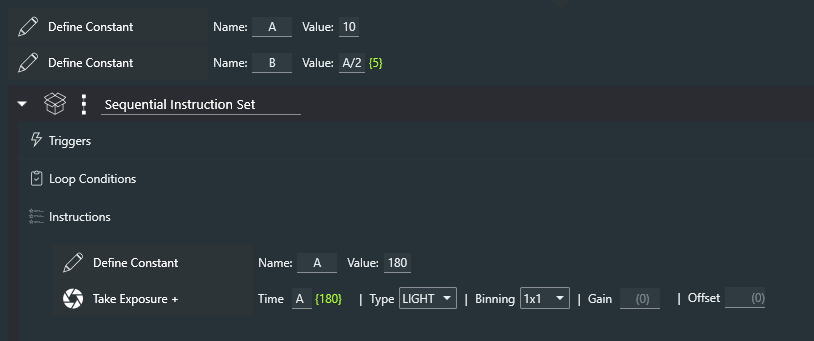
Variables
A Variable in Powerups is more similar to a traditional computer language variable; it also uses "block scope" (see above). A Variable is defined using the Define Variable instruction, which is entirely analogous to the Define Constant instruction, except that Variable definitions are not self-executing - the Variable does not exist prior to the execution of the Define Variable instruction. References to the Variable "below" it in the code will show Undefined: <varname> until the instruction gets executed.
The Set Variable instruction can be used to change the value of a previously defined Variable. For a value, any expression can be used - including the use of Constants and Variables that have been previously defined. The simplest form of this might this:
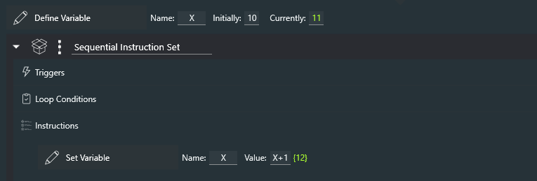
Just as in a procedural computer language, if you are looping through an instruction set, any variables defined in that set are reset to having no value before the loop repeats!
If (instruction), When (trigger), and Loop While (condition)
If and IfThenElse
The If instruction (previously If Constant) evaluates the given Expression and runs the specified instructions if that expression is not false (not 0 or "false"). This instruction was previously named If Constant.
The IfThenElse instruction (3.9.7) adds the ability to specify instructions to execute if the Expression is false.
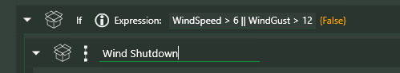
When
The When trigger (previously When Switch) triggers when the given expression is not false (not 0 or "false') and runs the specified instructions. There is a Once Only toggle in this instruction; setting this to ON will cause this trigger to run only once during execution of your sequence.
Warnings for the When Trigger
If you don't somehow arrange for the expression to become false during the execution of the included instructions, the When trigger will run every five seconds (after finishing those instructions). If you want to keep this from happening, set the Once Only toggle to ON
Unlike other Triggers, the When trigger trips within seconds of the expression becoming true, even interrupting instructions in process. This is very much unlike regular NINA triggers which trip between instructions.
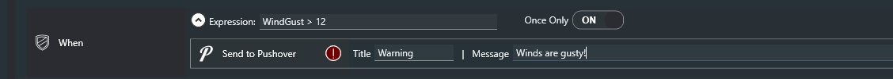
Loop While
Loop While is new; it's a standard NINA "Conditional" and gets placed with other conditionals in an instruction set. When queried (every 5 seconds or so while a sequence is running), it evaluates the given expression and terminates the loop if the result is "false" or 0.
Here’s an example of a very simple instruction set using Define Variable, Set Variable, and Loop While. Note that the Define Variable instruction needs to be outside the loop; otherwise the Lp variable will be reset to 10 every time the loop is restarted!
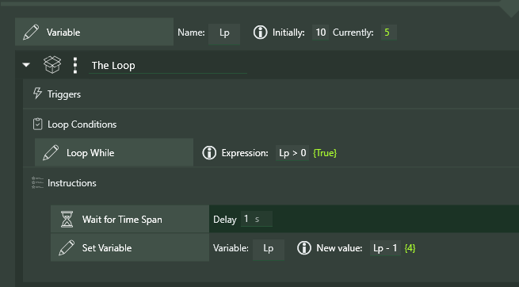
Note the red "i" (for "Information") icon in the Loop While instruction. Hovering over this icon will show all of the possible gauge, switch, weather, and camera data that can be used in the Exporession (this appears in both If and Loop While instructions). Here's what this might look like for you, depending on what devices you have connected at the time:
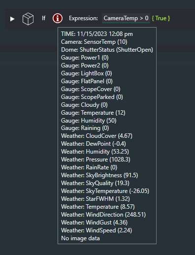
Here's an interesting example that uses these instructions to implement a timeout. The Loop While is basically running for up to 60 seconds OR until the confirmed variable becomes true. Each time through the loop, the If instruction checks whether a switch (in this case, GuideScopeOpen) has become "true"; if so, the Set Variable instruction sets confirmed to true. This ends the loop.
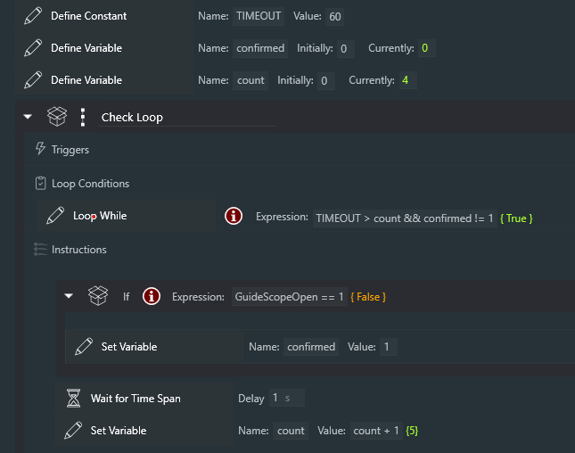
Presumably, when this loop finishes, another test of GuideScopeOpen will be used to determine whether the opening procedure has succeeded. If not, perhaps a Ground Station plugin message will be sent, or the sequence terminated.
Reserved Variables
The following Variable/Constant names are reserved:
SAFE - See the documentation for "Safety"
TIME - The current time in seconds since NINA was started, with an accuracy of 10 seconds or so. This is not intended, obviously, for highly accurate timing, but can be used, for example, with the When trigger to take actions at various intervals.
Dome shutter status names: DomeStatus, ShutterNone, ShutterOpen, ShutterClosed, ShutterOpening, ShutterClosing, ShutterError
Camera names: SensorTemp
Flat Device names: CoverState, CoverOpen, CoverClosed, CoverNeitherOpenNorClosed, CoverUnknown, CoverError
Filter Wheel names: CurrentFilter, Filter_name, where "name" is the name of the filter with all non-alphanumeric characters removed. So a filter named "My IR Filter" must be referred to as Filter_MyIRFilter.
Odds and Ends
• Wherever Constants of Variables are used, the current values are shown in brackets { }, in green if valid and in orange if invalid (not defined, etc.) These colors are currently fixed, and only appear nicely in certain color schemes; sorry about that! Here's a rather useless example:
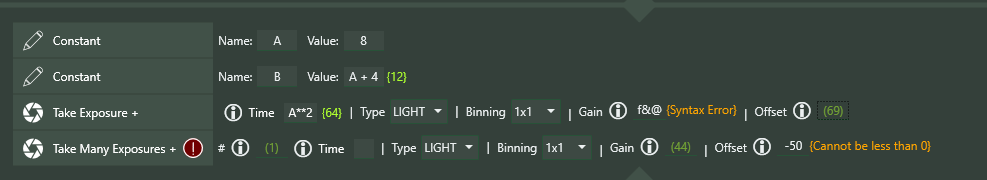
• Up to 10 "global" constants can be defined on the plugin page; each of them can be set for all of your NINA Profiles, or can be set on a per-profile basis.
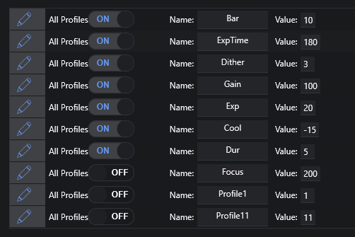
• Hovering over an Expression will show the current value of any Constants and Variables that are used in that Expression. In the example below, the Constant A is defined "Here" (meaning in the current block) and has a value of 8; the Constant CHATTER is defined globally and has a value of 200.
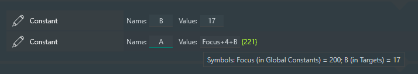
• If and Loop While instructions show the current result of the Expression.
• There is a Breakpoint instruction that stops sequence execution until you press the "Continue" button that appears when a breakpoint is hit. The Breakpoint instruction is exactly equivalent to Wait for Time Span of twelve hours.
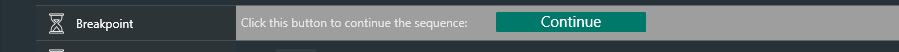
Summary
Constants have the same value throughout a sequence (in their scope) and do not change during sequence execution (or more precisely are not changed because of sequence execution). A human can change them, and that change takes effect immediately, but the sequence itself does not change them. Variables, on the other hand, are created and changed by sequence execution, without human intervention. However, you can always manually change the values of both Variables and Constants during execution, just as you can reorder instructions and do other dastardly things to yout sequence (with great power comes great responsibility). Just remember that manual changes can have side effects that might be unexpected!
Appendix: Functions and Operators in Expressions
These are the valid functions that can be used in Expressions.
| Method | Description |
|---|---|
Abs |
Returns the absolute value of a specified number |
Acos |
Returns the angle whose cosine is the specified number |
Asin |
Returns the angle whose sine is the specified number |
Atan |
Returns the angle whose tangent is the specified number |
Ceiling |
Returns the smallest integer greater than or equal to the specified number |
Cos |
Returns the cosine of the specified angle |
Exp |
Returns e raised to the specified power |
Floor |
Returns the largest integer less than or equal to the specified number |
Log |
Returns the logarithm the specified number |
Log10 |
Returns the base 10 logarithm the specified number |
Max |
Returns the larger of two specified numbers |
Min |
Returns the lesser of two specified numbers |
Pow |
Returns the specified number raised to specified power |
Round |
Rounds a value to the nearest integer or specified number of decimal places |
Sign |
Returns a value indicating the sign of a number |
Sin |
Returns the sine of the specified angle |
Sqrt |
Returns the square root of the specified number |
Tan |
Returns the tangent of the specified angle |
Truncate |
Calculates an integral part of a number |
if |
Returns whether an element is in a set of values - if(expr, then, else) |
in |
Returns a value based on a condition |
Here are the valid operators in Expressions
| Method | Description |
|---|---|
Arithmetical |
- , + , *, /, % |
Logical |
&&, ||, ! |
Bitwise |
&, |, ^, ~, <<, >> |
Comparison |
==, !=, >, <, >=, <= |